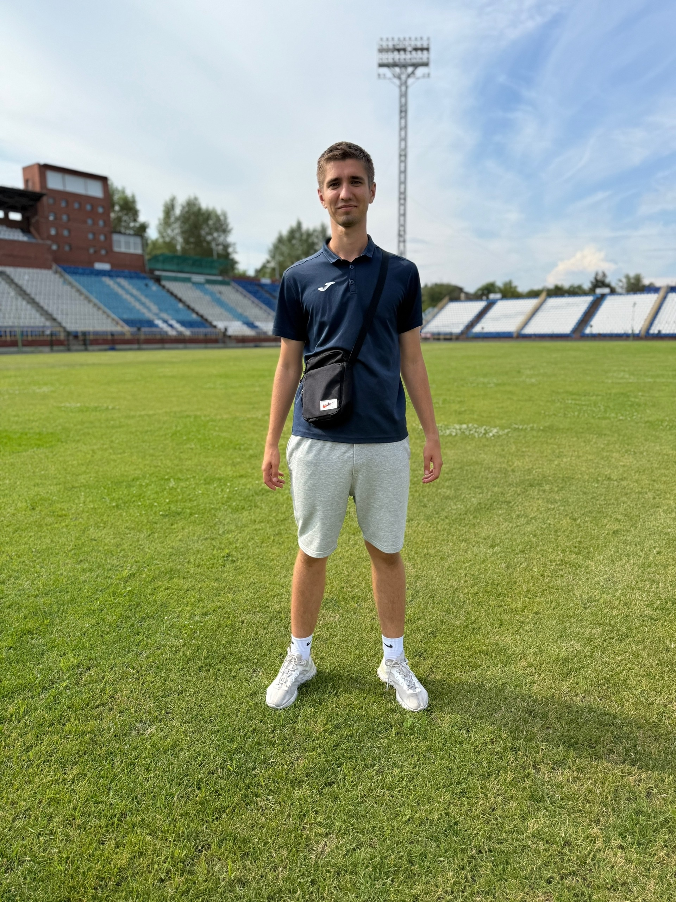

Футбол как часть моей жизни
С самого детства в моей жизни появился вид спорта под названием футбол, который с первых минут поразил меня своей скоростью, тактическим жанром и красочностью финтов.
Я играю в футбол на достаточно высоком уровне. Я слежу за событиями в мире футбола, поддерживаю любимые клубы и регулярно играю, достаточно на высоком уровне, без вреда для здоровья, а только истинное удовольствие. В Томске большой футбол отсутствовал до 2025 года, крупные компании перестали вкладываться в такие авантюры, больше сосредоточены на корпоративной этике проведением различных спартакиад.